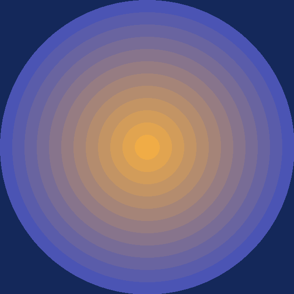
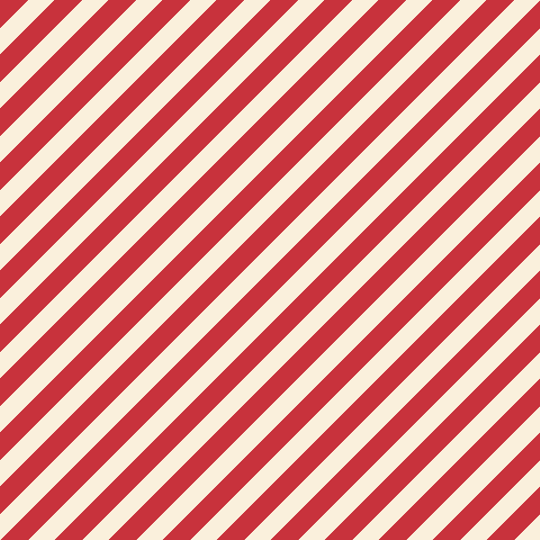
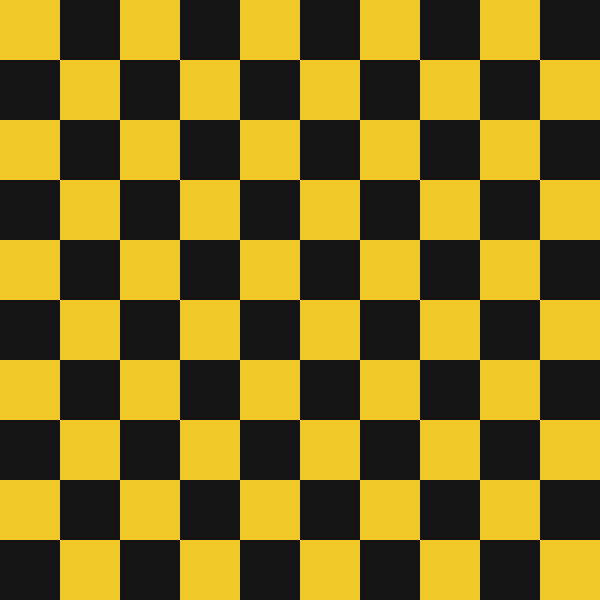
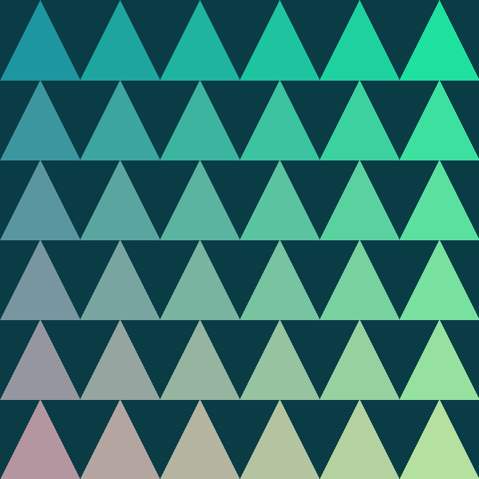
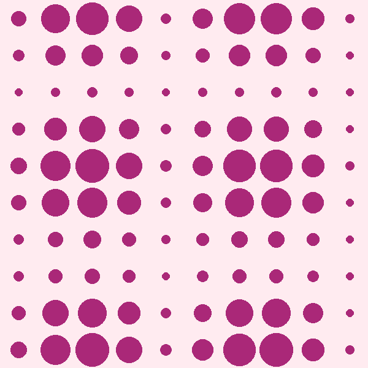
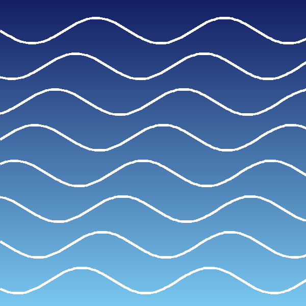
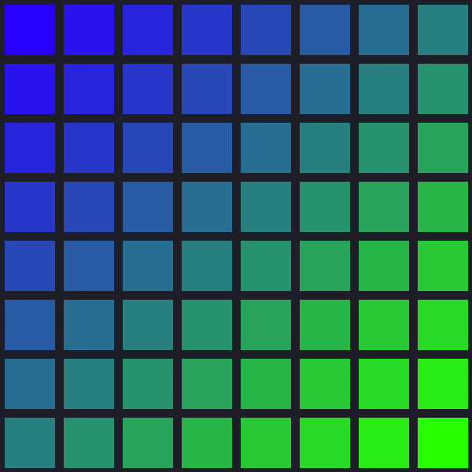
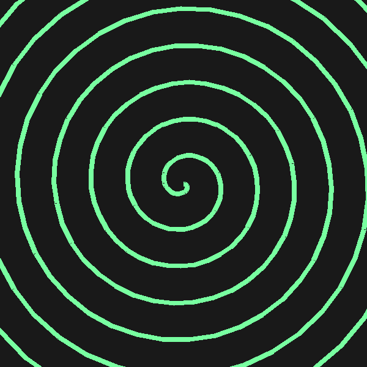

This gallery showcases nine original geometric patterns, each built from simple shapes such as circles, triangles, squares and lines. Together they show how a small set of basic forms and a handful of colors can produce very different visual moods.
The layout adapts to your screen: a single column on phones, two columns on tablets, and a wider arrangement on large screens. Your device's light or dark color preference is also respected, and animated scrolling is switched off if you have asked for reduced motion.







